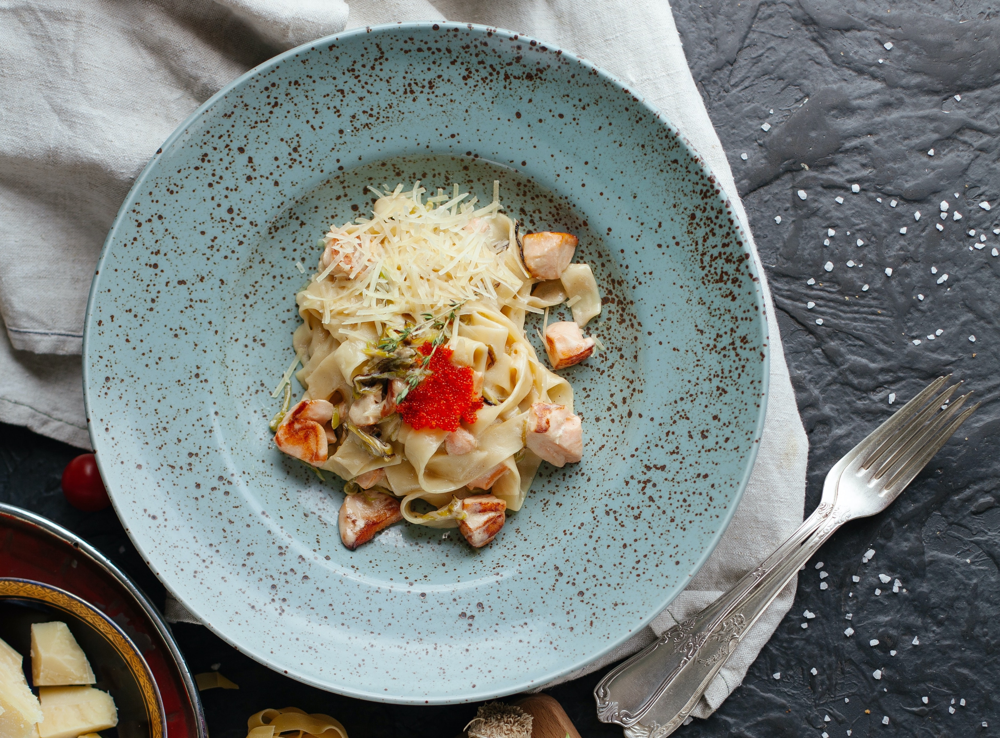

Pasta con Salmon
Ingredientes:
- Pasta
- Salmón fresco
- Espinacas
- Aceite de oliva
- Ajo
- Sal
- Pimienta
- Jugo de limón
Instrucciones:
- Cocina la pasta de acuerdo a las instrucciones del paquete.
- Corta el salmón en trozos y sazona con sal, pimienta y jugo de limón.
- En una sartén, calienta el aceite de oliva y agrega el ajo picado.
- Agrega el salmón y cocínalo hasta que esté dorado por ambos lados.
- Añade las espinacas y cocina hasta que se marchiten.
- Escurre la pasta y mézclala con el salmón y las espinacas.
- Sirve caliente y disfruta.

Pollo a la parrilla
Instrucciones:
- Marina las pechugas de pollo en una mezcla de jugo de limón, aceite de oliva, sal, pimienta y especias durante al menos 30 minutos.
- Calienta la parrilla a fuego medio-alto.
- Cocina las pechugas de pollo en la parrilla durante 6-8 minutos por cada lado, o hasta que estén completamente cocidas.
- Retira el pollo de la parrilla y déjalo reposar durante unos minutos antes de servir.
- Sirve y disfruta tu pollo a la parrilla.